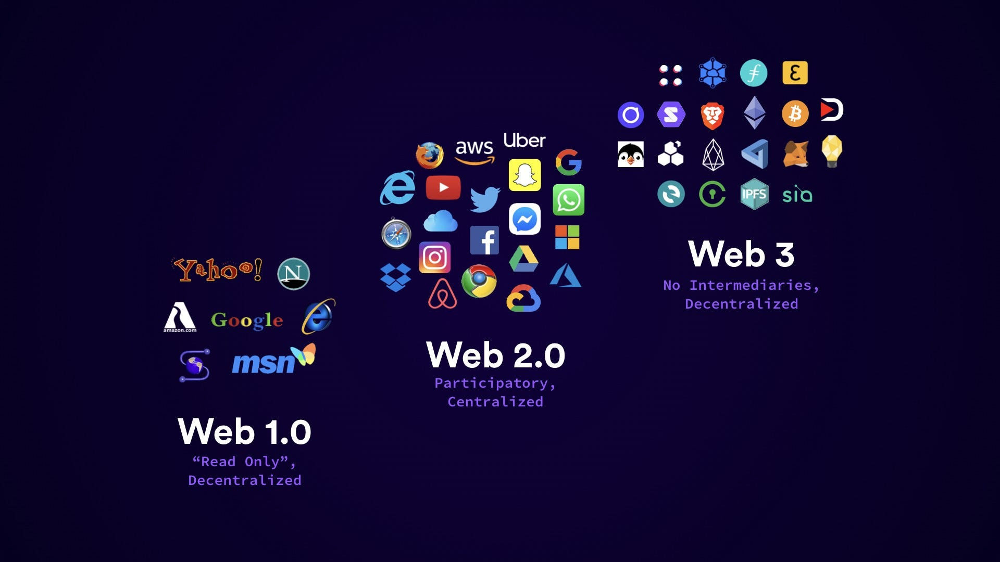

Web3 as the Internet of Science
The Web3 should be an internet of science not an internet of interruption marketing


Mathematics gives aspirants and experts the ability to navigate from domain to domain bijectively. it’s for me a natural transition to jump from financial world studies to social world studies because the foundational theories that structure these two fields are almost the same as if there was a mathematical fundamental law that governs every kind of science and even every kind of biological and natural ecosystem. But I am seeing at different scales, two exactly, the family-scale and the community or country scale, a behavior that has no sense demographically and which is only driven by economic interest leaving out all other social considerations.
This bad behavior is that we are cutting out excess of “fat” by ignoring more citizens, employees, or family members after that we have so much enriched ourselves as a society, company, or family using machines that allowed us to do more with fewer resources. For countries, it starts by trying to eliminate emigration first and less qualified citizens after, and for families, it starts by not taking into consideration the voice and opinion of the less wealthy family members. I had myself experienced the country-side effect as an immigrant of a developed European country and I am right now experiencing the second by weighing less and less in my own family. But I do believe that there is never less power for those who seek to be useful to our broad and diverse society by producing helpful things for others, in my case using my knowledge about technology and business thinking.
Our society is changing but we taking more and more bad decisions that only deserve powerful entities because the voice and studies of scientists like you and me and those of real religious people have been disrupted by opportunistic politicians and marketers who have profited from this open mediatized world brought by the internet revolution and accentuated by social media technologies.
Of course, the internet revolution and the birth of social media platforms helped people like me connect with great others human beings and knowledge of any kind but for the most important part of the society, this revolution has become a barrier of entry to science and a real tool of distraction, interruption and nonproductive and noninsightful debates and trends “misconceptually” called buzz. And we ended seeing people interested in buzz without even knowing a thing about diffusion science and epidemiology.
I am not in an unknown space if I got into demographic science and focus my interest in the mathematics of population because it has been a long time that I am alone and I am actually really willing to connect with others and feel the sentiment of belonging to something bigger than me. When I say something bigger than me I am not talking about religion because if it is about religion I am already feeling to belong to something bigger than me. But religions are for believers and I am willing to be useful to everybody, not believers only.
There is an opportunity for the internet of science away from this internet of entertainment, advertising, and social platforms that are driven by connecting people without goals and intend and content that has less and less educational value. Wikipedia is a great starting point for this internet of science and blockchains and Decentralized Autonomous Organisations (DAO) technologies can make it more rewarding to each internet user. I am really seeking to use this internet of science because I am one who is looking for the right direction to take and up until now science has proven to be the most insightful compass that could tell me the best direction to take. If you can build this internet of science please do it. For my part, I am trying but together we have more chance to chip it.
I campaign for the internet of science. Do you?